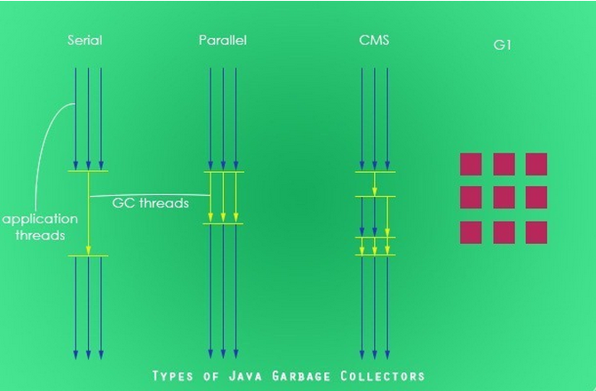

jvm垃圾回收算法
四种类型的垃圾回收器
- java有四种类型的垃圾收集方法。
- 串行垃圾回收器 (Serial Garbage Collector)
- 并行垃圾回收器 (Parallel Garbage Collector)
- 并发标记扫描垃圾回收器 (CMS Garbage Collector)
- G1垃圾回收器 (G1 Garbage Collector)
- 大致的区别

Serial Garbage Collector
- 串行垃圾回收器通过持有应用程序所有的线程进行工作。它为单线程环境设计，只使用一个单独的线程进行垃圾回收，通过冻结所有应用程序线程进行工作，所以可能不适合服务器环境。它最适合的是简单的命令行程序。
- 通过JVM参数-XX:+UseSerialGC可以使用串行垃圾回收器。
Parallel Garbage Collector
- 并行垃圾回收器也叫做 throughput collector 。它是JVM的默认垃圾回收器。与串行垃圾回收器不同，它使用多线程进行垃圾回收。相似的是，它也会冻结所有的应用程序线程当执行垃圾回收的时候.
- 通过JVM参数-XX:+UseParallelGC可以使用并行垃圾回收器。通过-XX:ParallelCMSThreads=设置垃圾回收线程数目。
CMS Garbage Collector
- 并发标记垃圾回收使用多线程扫描堆内存，标记需要清理的实例并且清理被标记过的实例。并发标记垃圾回收器只会在下面两种情况持有应用程序所有线程。
- 当标记的引用对象在tenured区域；
- 在进行垃圾回收的时候，堆内存的数据被并发的改变。
- 相比并行垃圾回收器，并发标记扫描垃圾回收器使用更多的CPU来确保程序的吞吐量。如果我们可以为了更好的程序性能分配更多的CPU，那么并发标记上扫描垃圾回收器是更好的选择相比并发垃圾回收器。
- 通过JVM参数 XX:+USeParNewGC 打开并发标记扫描垃圾回收器。
G1 Garbage Collector
- G1垃圾回收器适用于堆内存很大的情况，他将堆内存分割成不同的区域，并且并发的对其进行垃圾回收。G1也可以在回收内存之后对剩余的堆内存空间进行压缩。并发扫描标记垃圾回收器在STW情况下压缩内存。G1垃圾回收会优先选择第一块垃圾最多的区域.
- 通过JVM参数 –XX:+UseG1GC 使用G1垃圾回收器.